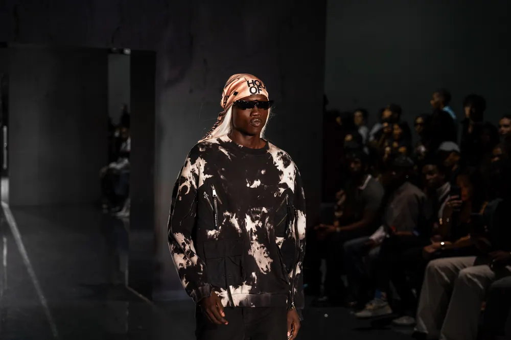
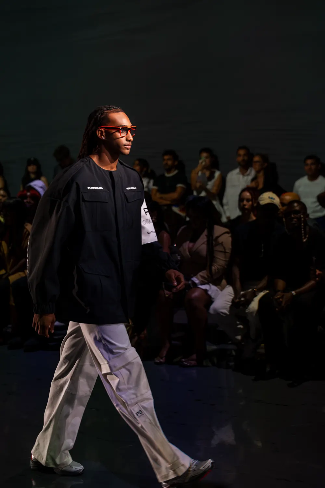
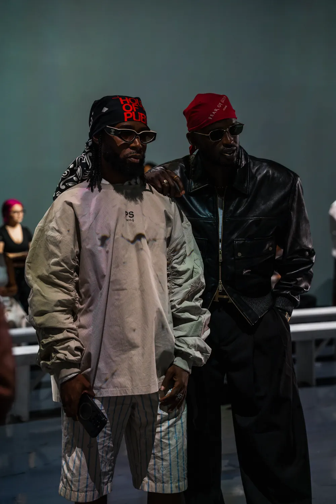
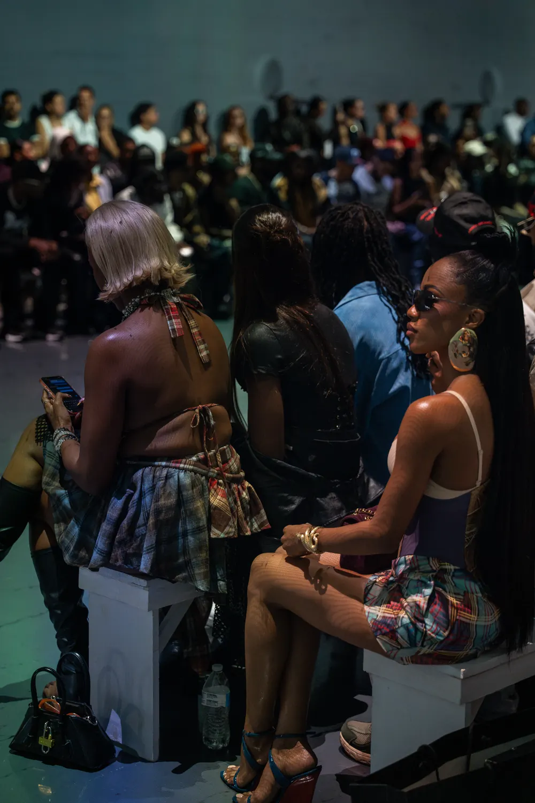
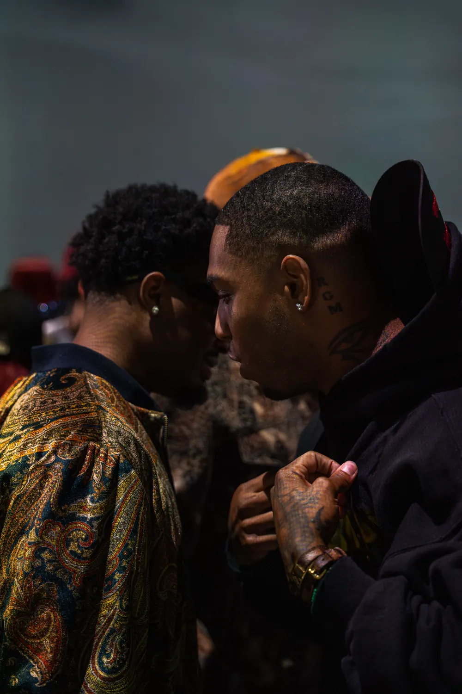

New York
New York Fashion Week Septembre 2026
Le 13 septembre, à l'Arte Museum de Chelsea, PUBLIC SERV-CE présentait « The Rest Is Noise » : tailoring précis, streetwear futuriste et musique électronique.
PUBLIC SERV-CE
Raphael Young






PUBLIC SERV-CE · Raphael Young · Printemps-été 2027 · « The Rest Is Noise » · New York · Septembre 2026
Dans la salle



